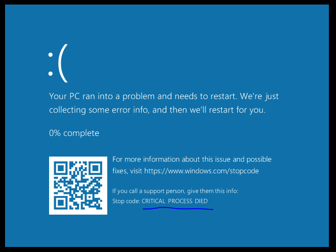

Windows Critical Threads
In the windows kernel, each kernel object has a Query/SetInformation functions which can be used to manipulate the kernel objects members from user/kernel mode. These functions receive an “INFOCLASS” which is basically the member we want to modify/query.
For example, this is a a small part of the info classes of the thread kernel object:
typedef enum _THREADINFOCLASS {
ThreadBasicInformation,
ThreadTimes,
ThreadPriority,
ThreadBasePriority,
ThreadAffinityMask,
ThreadImpersonationToken,
ThreadDescriptorTableEntry,
ThreadEnableAlignmentFaultFixup,
ThreadEventPair,
ThreadQuerySetWin32StartAddress,
ThreadZeroTlsCell,
...
// Many MoreExploring these members can yield interesting results. These members can be explored by reverse engineering the windows kernel, reading process hacker headers, or looking at the Windows Research Kernel source code.
The ProcessBreakOnTermination member of the process object is commonly used by Malware. It allows someone to mark a certain process as critical, meaning that if you try to kill this process via TerminateProcess, you’ll cause a blue-screen.
//
// Snippet from PspTerminateProcess
//
if (Process->Flags & PS_PROCESS_FLAGS_BREAK_ON_TERMINATION) {
PspCatchCriticalBreak(
"Terminating critical process 0x%p (%s)\n",
Process,
Process->ImageFileName
);
}Staring at some process hacker headers I found a lesser known member called ThreadBreakOnTermination 🤔 Searching google I haven’t found anything about it, I guess it may be useful.
As the name implies, this member allows you to set a thread to be critical - so if someone tries to terminate this thread, he’ll cause a blue-screen. Interestingly, the process can still be terminated by using NtTerminateProccess without any problem.
//
// Needed to enable this flag
//
EnableDebugPrivilege();
BOOL Enable = TRUE;
NTSTATUS Status = NtSetInformationThread(
GetCurrentThread(),
ThreadBreakOnTermination,
&Enable,
sizeof(Enable)
);SeDebugPrivilege is needed to set this. Otherwise, normal users could cause blue-screens.
This happened when I killed the thread:
